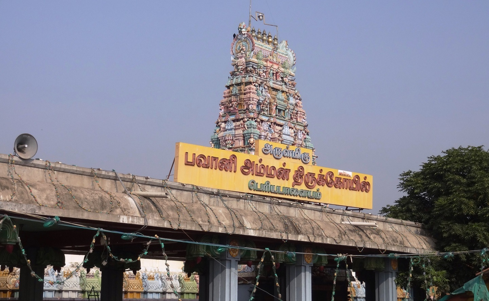

PERIYAPALAYAM BHAVANI AMMAAN TEMPLE
PERIYAPALAYAM BHAVANI AMMAAN TEMPLE

The temple is located in the Periyapalayam town of the Tenkasi district, on the banks of the Arani River.
It is famous among followers of Goddess Sakthi.
According to the legend people refer Amman as the sister of Lord Krishna who managed to escape from the clutches of Kamsan (Demon King)
and after warning Kamsan about his death she decided to settle in this place in name of Sri Bhavani.
vi Bhagavatam mentions that Bhavani Devi is the true form of Aadhi Parashakti. She is considered to be Lord Krishna's sister.
Lord Vishnu performed penance to seek Devi's assistance for the Krishna avatar.
This led to Devi being born to Yashoda as Sri Krishna's sister.